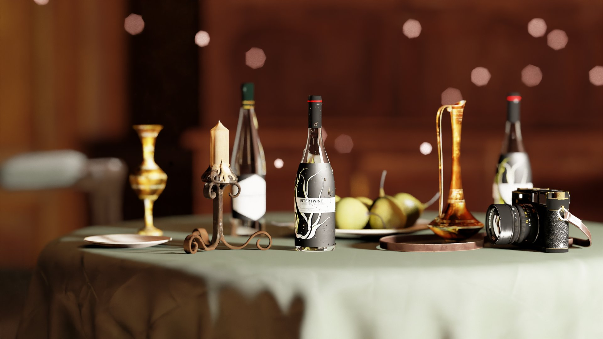
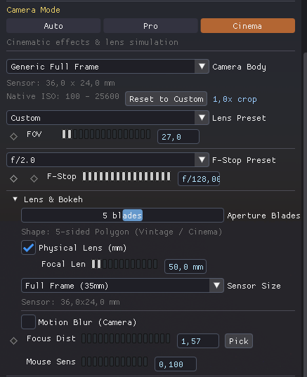

← Back to Home

Pro Camera & Rendering

RayTrophi uses a physically based camera model to simulate real-world optics, including Depth of Field and Exposure.
1. Physical Lens Settings

Please save a screenshot of the Camera Panel as
manual/images/camera_lens.png
| Parameter | Description |
|---|---|
| Focal Length | Zoom level (mm). |
| Aperture (f-stop) | Controls the size of the lens opening and DoF. |
| Focus Distance | The exact distance where objects appear sharp. |
2. Exposure & Post-Processing
Please save a screenshot of the Post Processing Panel as
manual/images/camera_dof.png
| Parameter | Description |
|---|---|
| ISO | Sensor sensitivity. |
| Shutter Speed | Exposure time (1/s). |
| Tonemapping | Converts High Dynamic Range (HDR) to screen colors. |